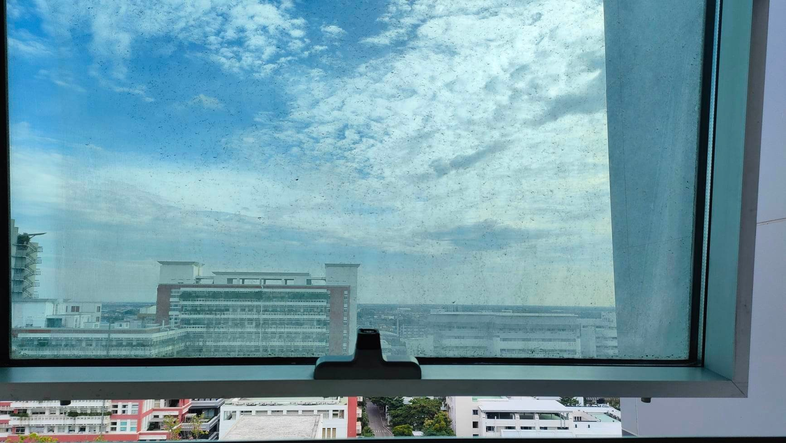
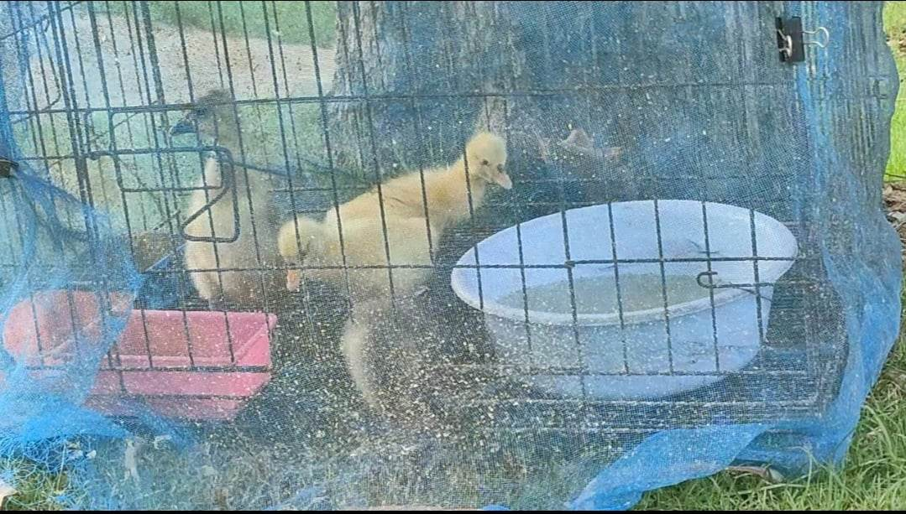

วันที่ 27 ตุลาคม 2022 🌕

วันนี้เป็นวันที่พลอยสอบเสร็จ ก็เดินลงมากับเพื่อน แอบเสียดายที่ไม่ได้อยู่ดาดฟ้าต่อ เพราะวันนั้นแอบตึง ๆ แต่เพราะเพื่อนลงไปกัน ก็เลย จะไม่ตามไปก็คงยังไงมั้ยนะ ..
พลอยตามลงไปทั้งที่จิตใจยังรู้สึกเหนื่อยล้า สุดท้ายพลอยเลยเผลอหลุดปากบอกเพื่อนข้าง ๆ ไปว่า พลอยอยากอยู่คนเดียวจัง แบบเผลอตัว
เพื่อนเหมือนตกใจนิดนึงแต่ก็ยอมเดินห่างออกไป แล้วเหมือนบอกให้พลอยทำตามใจ พลอยเลยเดินหนีไปเงียบ ๆ โดยไม่ได้บอกกลุ่มเพื่อน แอบรู้สึกผิดนิดหน่อยเหมือนกัน แต่คิดว่าไม่มีพลอยเพื่อนก็คงไม่ตกใจกันมากมั้ง
พลอยมุ่งหน้าไปหาแมวที่ฟิโบ้
น้องเป็นเซฟโซนใหม่ของพลอย
เพราะตรงนั้นแทบไม่มีใครรู้จัก และแมวน่ารักมาก พลอยเลยอยากไปย้อมใจตัวเอง แต่สุดท้ายพลอยกลับได้ข่าวจากป้ามาว่า น้องไม่อยู่แล้ว ที่ไม่ใช่ได้บ้าน แต่เป็น น้องตายแล้ว โดนงูกิน
ป้ามองว่าพลอยรักน้อง ๆ มาก เลยบอกว่าอย่าร้องไห้นะลูก ซ้ำ ๆ พลอยก็ยิ้ม ๆ ส่วนตัวพลอยคิดว่ามันไม่ส่งผลอะไรกับพลอยมากขนาดนั้น พลอยรักน้อง ๆ แต่ไม่ค่อยได้เล่นกับน้อง เลยไม่ค่อยผูกพัน เพียงแค่เคยเลี้ยงอาหารน้องแค่ 1-2 ครั้ง ป้าบอกให้พลอยไปเล่นลูกห่านที่มาใหม่แทน พลอยเลยเดินไปดู พยายามป้อนหญ้าให้น้องพักนึง
แล้วก็คิดเรื่อง ๆ ต่าง ๆ แล้วก็ร้องไห้ออกมาพักนึง จนโอเคขึ้นเลยเดินออกไป
